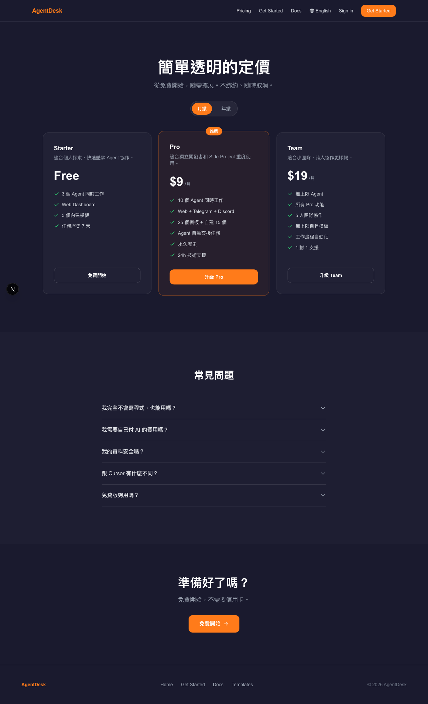
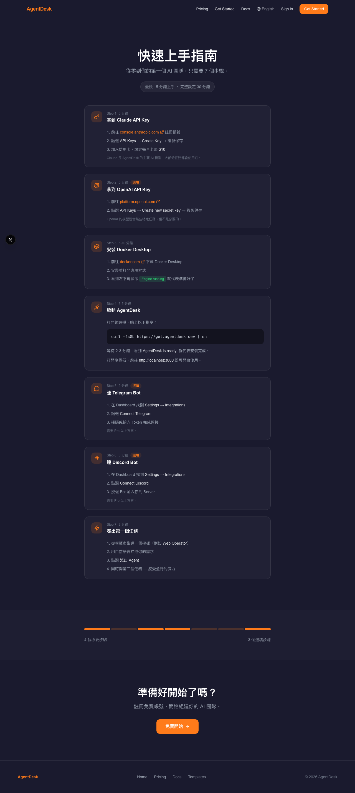

10 個 implementation tasks · 63 個 commits · WCAG AA+ 合規 · RWD 全尺寸 · 深色模式完整
2026-03-18 · Subagent-Driven Development · 3-Layer Review
淺色主題的完整視覺轉換，展示所有核心頁面的現代化設計。


從深色主題（#1A1A2E + #FF7B1A）到淺色主題（#ffffff + #e65100），確保品牌一致性、WCAG 合規、響應式設計、深色模式完整支持。
完整的 CSS 變數系統、深色模式覆蓋、響應式設計驗證。
所有程式碼變更已通過規格合規檢查、ESLint 與 TypeScript 類型檢查、單元測試、編譯與構建驗證。設計架構經由獨立審查，確認無風險、無遺漏需求、無邊界情況缺陷。程式碼品質達到生產就緒標準。